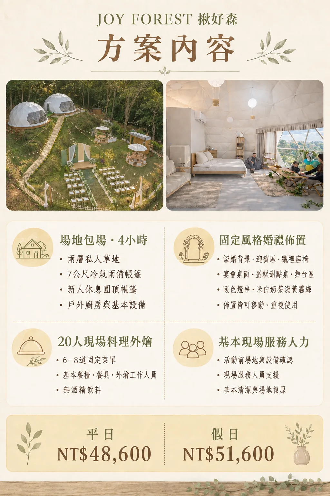
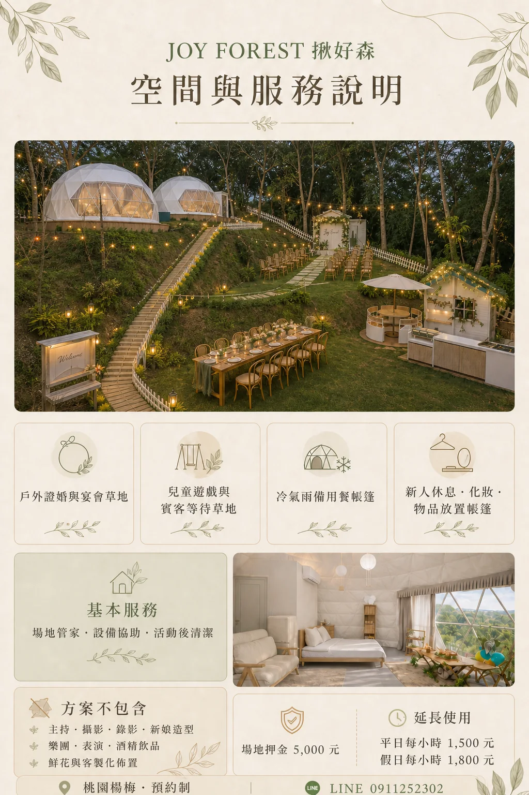

場地包場｜4 小時
平日NT$12,800
假日NT$15,800
限 20 人內，包含兩層草地、兩座圓頂帳篷、戶外料理／備餐區、兒童遊戲區與基本場務接待。時段與進退場時間預約時確認。
桃園楊梅｜單組預約制｜20 人內
婚禮、生日、抓周、家庭聚會或品牌活動，都使用同一套清楚方案。可只租場地，也可加購揪好森固定的白、淺黃、奶茶與霧綠森林風佈置；不承接改色或客製主題。
這是一處有森林氣氛、能自在相聚的小型活動場地。兩層草地可分成主宴會區與遊戲／接待區；兩座 7 公尺圓頂帳篷可作為雨備用餐區與主角休息室。

PRICE
以下為 20 人內公開參考價。場地可以單獨預約；不需要固定佈置，就不收佈置費。
限 20 人內，包含兩層草地、兩座圓頂帳篷、戶外料理／備餐區、兒童遊戲區與基本場務接待。時段與進退場時間預約時確認。
NT$9,800
白、淺黃、奶茶與霧綠的低飽和森林色系。包含迎賓／拍照背板、蛋糕甜點桌、桌面小物、布幔、燈串與植栽配置；可在室內外移動使用。
固定款式，不提供改色、改主題或客製設計。若不選用，此費用直接扣除。
每位 NT$2,500 起
合作主廚到場烹調，料理完成後直接上桌。20 人餐食以 NT$50,000 起計；實際菜單、交通、設備、餐具與飲品內容依日期和合作廠商確認。
這是現場料理等級，不是送達後擺盤的外送餐盒。
平日 NT$12,800＋NT$9,800＋NT$50,000；假日只調整場租。
約 5 × 15 公尺，可安排迎賓、用餐座位、證婚走道、表演區與活動背板。
約 5 × 15 公尺，設有溜滑梯、盪鞦韆與沙坑，可作親子遊戲、接待或賓客等候區。
直徑約 7 公尺，遇雨可改作室內用餐或活動空間，實際容納仍依桌椅配置調整。
直徑約 7 公尺，可供新人、壽星、家庭成員休息、準備與暫放活動物品。
提供合作外燴主廚現場料理與備餐使用；設備需求由活動前確認。
包含開場說明、空間交接與活動結束確認；主持、流程企劃與專屬婚顧不在本方案內。
STYLE PREVIEW
同一批可移動道具可配置在草地或帳篷內，依活動當天動線安排拍照背板、甜點蛋糕桌、賓客座位與小型舞台區。


PARTNER ADD-ONS
以下不是基本方案必選項目。若客人需要，我們可協助尋找外部廠商與銜接進場；公開價格已預留約 50% 的協調與行情變動空間，最後仍依日期、時數、內容與廠商正式報價確認。
NT$12,000～22,500
約 2～4 小時，包含基本流程確認與現場控場。
NT$22,500～60,000
流程設計、廠商溝通與活動執行；複雜度高時另報。
NT$10,200～15,000
約 2 小時活動紀錄；超時、雙攝影師或婚禮流程另計。
NT$15,000～22,500
約 2～4 小時，包含前段準備與主要儀式紀錄。
NT$12,000～30,000
妝髮、到場服務與造型變化依需求確認。
NT$12,000～30,000
約 30～60 分鐘；大型道具、互動人數與交通另計。
NT$9,000～22,500
折氣球、親子互動或小型舞台演出，依時數與人數確認。
NT$22,500～60,000
依表演人數、場次、音響與交通需求報價。
NT$9,000～22,500
基本音響、無線麥克風、投影或現場技術人員。
20 人 NT$12,000～30,000
下午茶、甜點桌、蛋糕與無酒精飲品；內容依品牌與份量確認。
NT$15,000～37,500
依酒款、杯數、服務時間與設備需求報價。
NT$30,000～90,000
需要指定色系、主題或大型花藝時，由外部佈置公司承接。
以上為方便初估預算的參考區間，不是固定承諾價；確定檔期前會先提供合作廠商實際內容與正式報價，由客人確認後才安排。
佈置只提供網站所示固定色系與風格。若需要指定主題、花藝、特殊色調或完整婚禮企劃，請自行委託佈置公司或婚顧。
現場料理外燴以每位 NT$2,500 起估算；菜單、特殊飲食、酒水、服務人數與設備會影響最後金額。
若需延長使用、專業音響、舞台技術、發電設備或其他特殊需求，須另行確認場地條件與費用。
網站圖片用來說明風格與配置方向；實際陳設會依天氣、草地狀況、安全動線與當日活動內容調整。
BOOKING
請傳送活動日期、預計時段、人數，以及是否需要固定佈置與現場料理外燴。